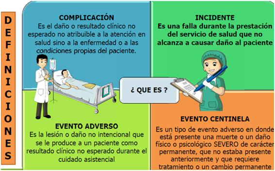

Seguridad del paciente e infecciones asociadas a la atención en salud
Se cuenta con la política y el modelo de seguridad del paciente y prevención frente al riesgo. En aras dar cumplimiento a la norma y brindar atenciones seguras se realizan actividades como son: medición del clima de seguridad, análisis de los eventos adversos y sus planes de mejora.
Estudio de todos los códigos azules con el fin de mejorar la atención frente a estos eventos, campañas como la de lavado de manos, reporte de eventos adversos, entre otras implementaciones de todas las medidas de seguridad propuestas por el Ministerio bajo sus lineamientos, los cuales son:
Identificación del paciente: Actividad que se realiza en cada uno de los procesos asistenciales y administrativos y en donde se implementaron medidas de doble de verificación y demarcación del paciente a través de manillas no solo en el proceso de hospitalización sino también en los procesos de urgencias y partos.
Atención del binomio madre e hijo: Donde se da prelación a la atención de la materna y de los recién nacidos y se ha capacitado al personal de salud y auditado frente a la atención realizada con el fin de mejorar y asegurar una atención adecuada.
Administración de segura de medicamentos: Se adelantan capacitaciones a los funcionarios y usuarios de la ESE frente a este tema con el fin de disminuir eventos adversos relacionados con el uso de los medicamentos.

Programa de infecciones asociadas a la atencion en salud
Programa destinado a desarrollar y fortalecerdestrezas y competenciaspara detectar prevenir yreducir el riesgo deinfecciones asociados a en los pacientes de la ESE.
Los Comités son instrumentos establecidos en las organizaciones con el fin de hacer seguimiento a procesos o temas de importancia, por lo cual, son un mecanismo valioso que contribuye al seguimiento y retroalimentación de la calidad generando información para la colocación en marcha de acciones correctivas o preventivas.